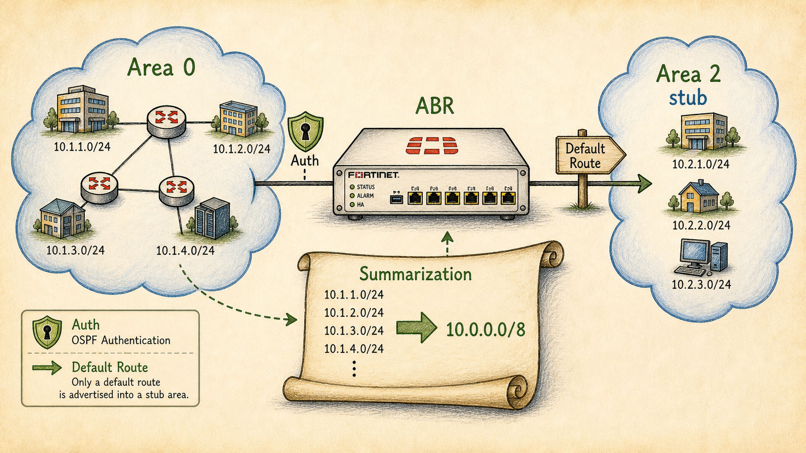

Ready to Begin the Session
| Official NSE7 EF Blueprint Objectives |
|
| Prerequisites | Session 21: OSPF — Areas, LSAs & Neighbor States |
| Estimated Duration | 25-30 minutes |
| Phase | Phase 5 — Dynamic Routing: OSPF & BGP |
Session 22 — OSPF Authentication, Summarization & Stub Areas Where we are in the NSE7 journey: Hello-only OSPF works in a lab; production OSPF needs to defend against rogue neighbors, contain failures, and minimise LSA churn. The problem we're solving today: These three features (auth, area-type, summarisation) are the OSPF tools the exam most often hides inside a 'why is this not working?' scenario. Session goal: Harden an OSPF design with authentication, mark a leaf area as totally stubby, and summarise prefixes at the ABR. Key concepts: • OSPF MD5 / HMAC authentication on FortiGate • Area type matrix: stub, totally stubby, NSSA, totally NSSA • Inter-area summarisation (`area range`) • External summarisation (`summary-address`) • Passive interfaces — quiet but still in the database
Where We Are in the NSE7 Journey

A FortiGate ABR at centre.
Hello-only OSPF works in a lab; production OSPF needs to defend against rogue neighbors, contain failures, and minimise LSA churn.
The Problem We're Solving Today
These three features (auth, area-type, summarisation) are the OSPF tools the exam most often hides inside a 'why is this not working?' scenario.
Key Concepts
- OSPF MD5 / HMAC authentication on FortiGate
- Area type matrix: stub, totally stubby, NSSA, totally NSSA
- Inter-area summarisation (`area range`)
- External summarisation (`summary-address`)
- Passive interfaces — quiet but still in the database
What We Discovered Together
Parsed from the persistent session summary produced at the end of the Socratic investigation. Use it to rebuild context before a review or a lab.
Session Information
- Session Number22
- TopicOSPF — Authentication, Summarization & Stub Areas
- DateJuly 2026
- CertificationFortinet NSE7 Enterprise Firewall 7.6 (Domain 4 — Routing)
Story Progress
Setting: Vaultline Financial, one week after the S21 DR-site area redesign shipped (DR site now area 0.0.0.3; flap = partial SPF only). Two problems land simultaneously on a Tuesday morning.
Events: (1) Daniel finally got his S20-queued authentication question answered — triggered by a vendor advisory about a rogue Linux OSPF daemon on a conference-room jack forming a full adjacency with a production core. Investigation established that default OSPF runs on pure trust (all hello-match fields are plaintext or trivially satisfiable), passive-interface can't protect the core trunk (it kills legit neighbors too), plaintext auth is defeated by a single capture, and only MD5/HMAC (key never transmitted; digest of key+packet; sequence number defeats replay) actually solves the rogue-neighbor problem. Auth is per-interface; mismatch = no neighbor entry ever. (2) The DR-site LSDB was found bloated with Type 3/5 entries for a one-exit site — student derived "default route is the floor," named stub area unprompted, and correctly extended to "both ABR and internal routers must be configured." E-bit handshake revealed as the enforcement (mismatch = no adjacency). Totally stubby introduced as the unilateral ABR-side extension (no-summary; fewer LSAs of a known type breaks nothing). NSSA/Type 7 covered as "stub that needs a local ASBR." Harbourview (area 0.0.0.2) got the area-range treatment: four /24s (10.50.8-11.0/24) → one 10.50.8.0/22 Type 3, chosen because Priya wants visibility, not a black-box default. summary-address flagged as the ASBR-side equivalent, queued for FG-EDGE-P redistribution. Passive interfaces closed the loop: hellos silenced, but Type 1 stub network entry still originated ("quiet but still in the database").
Go-live design finalized: office VLAN passive; core trunk HMAC; area 0.0.0.3 totally stubby; area 0.0.0.2 regular + area range; summary-address queued for S23.
Outstanding / cliffhangers- S23: eBGP FG-EDGE-P→ISP-A, FG-EDGE-DR→ISP-B; redistribution makes the ASBR badge real; summary-address becomes live; AD ladder + "why eBGP beats OSPF" (S20 carryover STILL due — now three sessions old).
- WAN link area assignments still parked from S21 (config-session material).
- Marcus's NOC alerting hooks still open; split-policy architecture (S39/40) and VDOM partitioning (S16/18) threads still open.
Concepts Learned
2. Auth types: 0 = none (trust everyone); 1 = plaintext (defeated by tcpdump — fat-finger protection only); 2 = MD5/HMAC-SHA (key never on the wire; digest of key+packet; non-decreasing sequence number defeats replay). Per-INTERFACE, not global. Mismatch = no neighbor at all (same failure family as area/subnet/timers). FortiOS: config ospf-interface > set authentication md5 > config md5-keys.
3. Stub-family derivation: one-exit router's information floor = a single default route. Stub kills Type 5s (ABR injects default), requires area-wide agreement enforced by the E-bit in hello Options — mismatch = no adjacency (clean refusal beats silent disagreement). Totally stubby = stub + ABR unilaterally replaces Type 3s with one default Type 3 (set stub-type no-summary, ABR only) — no new handshake because fewer LSAs of a known type is a quantity change, not a type violation. NSSA = stub that hosts a local ASBR via Type 7, converted to Type 5 at the NSSA's ABR. Backbone can never be stub.
4. area range (ABR, Type 3): shorter mask covers multiple contiguous prefixes; summary = "traffic for this block comes through me," NOT a subnet inventory; stays advertised while ≥1 component lives; hides volatility behind a stable boundary (one flapping /24 no longer floods the backbone). summary-address (ASBR, Type 5): identical idea at the external border.
5. Passive interface: no hellos → no adjacency possible, but the subnet is still originated in the router's own Type 1 as a stub network entry. Hides willingness to peer, not the network. Right tool for no-neighbor interfaces; useless for trunks that must peer (that's auth's job).
6. Elimination trick upgraded: visible neighbor at ANY state now exonerates timers/area/subnet + AUTH + E-BIT (all hello-stage gates).
My Understanding
Strong moments- Derived "default route is the floor" instantly and named STUB AREA unprompted, before the term was introduced.
- Correctly extended stub config to "both sides" (ABR + internal) without being told.
- Crypto auth reasoning clean: "they would need the actual password"; plaintext "still form a relationship by a TCPdump" — exact.
- Predicted no-adjacency for E-bit mismatch once pattern-matched against the session's other hello-gate failures, with correct rationale (saves the routers from reconciling a mismatch).
- area range definition produced cold: "prefix with a lower subnet mask covering multiple subnets."
- Summarization troubleshooting nailed cold: "summary doesn't tell us the /24 is up... look at a router within the same area."
- Passive interface answered cold and precisely: Type 1 still originated, no neighbor sought.
- Good session self-management: asked to serialize threads ("focus on rogue first") and to compress when a concept had landed ("I get it, cut to the main point").
Struggles / corrections (register candidates):
- MTU IN THE HELLO: guessed MTU is carried in the OSPF hello. Wrong — MTU is in DBD packets at Exchange; own S21 stuck-ExStart rule was the disproof. RE-DRILL: "MTU is a DBD field, not a hello field — that's WHY the mismatch symptom is stuck ExStart."
- AUTH SCOPE: guessed authentication "is a global setting for ospf." Wrong — per-interface (that's what makes trunk-vs-locked-room granularity possible).
- E-BIT MISMATCH: first answer "they would form but the advertisements would be different" — corrected via the session's own pattern (hello-gate mismatches never half-work) to no-adjacency.
- Totally-stubby unilaterality: asked for the answer directly (retrieval fatigue late in session) — the unilateral-ABR/no-new-bit distinction was HANDED, not derived. Worth one cold retrieval pass.
- Initial rogue-neighbor answer leaned on passive-interface alone; needed prompting to see it can't protect an interface with legitimate neighbors.
Troubleshooting Experience
- Scenario"Harbourview can't reach 10.50.9.0/24" two weeks post go-live; the 10.50.8.0/22 area-range summary still healthy in area 0. Student correctly identified the summary proves nothing about the specific /24 and moved diagnosis INSIDE area 0.0.0.2 (specifics exist un-summarized only inside the area). Lesson coined: summarization and stub-ness trade visibility for stability, and the cost is that troubleshooting must happen closer to the source — know where the lie of omission lives in your own design. Failure-signature table extended: auth mismatch and E-bit mismatch both present as NO neighbor entry (invisible, not stuck), joining timers/area/subnet; MTU stays the stuck-ExStart case; dead component behind a healthy summary presents as reachability loss with a perfectly healthy border.
Connections
- BackwardS21's neighbor-state fault tree did heavy lifting (hello-gate vs ExStart-gate placed MTU correctly and predicted E-bit behavior); S21's DR-site area decision is what made the stub question real; FGCP/VRRP shared-secret mechanics (S15-19) were the shape-hint that unlocked authentication; S20's "facts vs claims" reappeared as "a summary is a claim about a block, not an inventory."
- ForwardS23 eBGP peering + redistribution activates FG-EDGE-P's ASBR role and makes summary-address live; NSSA/Type 7 becomes practically relevant if any leaf ever hosts local redistribution; all routing feeds ADVPN (Domain 5).
Important Takeaways
- Default OSPF runs on pure trust: every hello-match field is public. Matching the fields IS the trust.
- Type 0 trusts everyone; Type 1 trusts anyone with a sniffer; Type 2 trusts key-holders only — the key never crosses the wire, and the sequence number kills replay.
- Auth is per-interface. Mismatch = invisible neighbor, not a stuck state.
- One exit = the information floor is a default route. Stub kills Type 5s (E-bit handshake, area-wide); totally stubby also kills Type 3 specifics (ABR-side no-summary, unilateral). Banning a TYPE needs a handshake; sending FEWER needs none.
- NSSA = stub that needs a local ASBR: Type 7 inside, Type 5 after ABR conversion. Backbone is never stub.
- A summary is a claim, not an inventory: alive while one member lives. Healthy summary at the border proves nothing about a specific prefix — diagnose inside the area.
- area range = ABR/Type 3; summary-address = ASBR/Type 5. Same trick, different border.
- Passive silences the peering, not the prefix: Type 1 stub network entry still originated.
- Visible neighbor at any state exonerates ALL hello-stage gates: timers, area, subnet, auth, E-bit.
Future Session Notes
- Reinforcement(a) S21 re-drills STILL DUE and now urgent — cold quiz Type 4 originator ("the ABR, about the ASBR"), Type 5 scope ("domain-wide, unchanged"), and the cost formula ("big pipe, small cost") at the top of S23; (b) new from S22: cold-drill "MTU is a DBD field, not a hello field" and "auth is per-interface"; (c) one retrieval pass on totally-stubby unilaterality (it was handed, not derived): "why does no-summary need no handshake?"; (d) S20 carryover now three sessions old: AD ladder + why eBGP beats OSPF, route-flapping terminology, 10/40 vs 60/180 + TCP 179 — S23 (BGP) is the natural forcing function, do it there or drop it to the weakness register.
- Storyopen S23 with the eBGP peering configs (FG-EDGE-P→ISP-A, FG-EDGE-DR→ISP-B) — Priya's "the 55-minute outage must be impossible" requirement. Redistribution activates the ASBR badge and the AD ladder live. WAN-link area assignments (parked since S21) fit naturally when the peering configs land. Marcus can reappear for NOC alerting once BGP state exists to alert on.
- Spaced repetition dueFGCP internals cold quiz remains the top weakness-register candidate (unchanged since S18/S20/S21). Weakness-01 session on Cluster A1 still the recommended next weakness session.
Audio Podcast Prompt (For "The Packet Path")
Write a two-host podcast script for "The Packet Path," a storytelling podcast for network engineers. Host: Alex, an experienced network security consultant. Co-host: Sam, smart and curious, asks clarifying questions. Tone: intelligent, conversational, true-crime documentary style for network engineers. Episode title: "The Protocol That Trusted Everyone." Length: 12–15 minutes of dialogue.
The case: a vendor advisory lands at a financial company — at another firm, a laptop running a Linux OSPF daemon, plugged into a conference-room jack sharing a VLAN with a core trunk, formed a full adjacency with production routers. An engineer asks the terrifying question: could that happen to us, today? The parallel case: the company's own DR-site router, one exit to the world, drowning in routing detail it can never act on.
Beats, in order: (1) The audit — walk the four things two OSPF routers must match (area ID, subnet, timers, MTU) and discover none is secret: area and timers are broadcast in cleartext every 10 seconds to 224.0.0.5; the subnet is the price of being on the wire; and MTU isn't even checked at hello — it hides in DBD packets, which is exactly why an MTU mismatch strands routers at ExStart. Default OSPF runs on pure trust. (2) Sam: "so just set a password?" — the Type 1 trap: a plaintext password rides in the same packet the attacker is already capturing; it stops typos, not adversaries. (3) The real lock: MD5/HMAC — the key never crosses the wire, only a digest of key-plus-packet; a captured archive is worthless; a rolling sequence number kills replay. Per-interface, and a mismatch produces the eeriest symptom in OSPF: a neighbor that simply never appears. (4) The second case: the one-exit router. Alex's reveal — if every destination resolves to "send it toward HQ," the information floor is a single default route; everything above the floor is SPF math the router pays for and never uses. (5) Stub areas and the E-bit: banning Type 5s is a type-level agreement checked in every hello — mismatch means no adjacency, because OSPF prefers clean refusal over silent disagreement. Then the twist: "totally stubby" needs no handshake at all — the ABR just sends fewer Type 3s, and receiving less of something you understand breaks nothing. (6) The middle path: area range — four flapping /24s become one immovable /22; the summary is a claim about a block, not an inventory of subnets. (7) The sting: two weeks later, one /24 dies and the summary stays green. The border is telling a lie of omission — the truth only exists inside the area. Close with Alex: "OSPF's scariest packets are the ones it doesn't send: the hello that never gets answered, the LSA that never gets withdrawn. Learn to hear the silence."
Sam should ask: "Wait — the password is IN the packet they're capturing?", "If the key never crosses the wire, how does the other side check it?", "Why can't just one router decide to ignore the noise?", "How can sending LESS information not need an agreement?", and "The summary was healthy and the subnet was dead — how is that not a bug?"
Guides, Bites & Nibbles
Additional resources sorted to this session — deeper guides, focused explainers, and quick-reference cards.